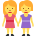

أسماء الإشارة
الدرس 4 من 5 — التطبيقات الكتابية: الصرف والتحويل
أُلاحظ
أقرأ الأمثلة وأستمع إليها، وألاحظ الكلمات الملوّنة.
- هَذَا قِطٌّ.
- هَذِهِ فَرَاشَةٌ.
- هَذَانِ وَلَدَانِ.
- هَاتَانِ بِنْتَانِ.
أستنتج
اسم الإشارةاسمٌ نُشير به إلى شيء أو شخص.
| اسم الإشارة | نستعمله لـ | مثال |
|---|---|---|
| هَذَا | المفرد المذكّر القريب | هَذَا قَلَمٌ. |
| هَذِهِ | المفرد المؤنّث القريب | هَذِهِ مِسْطَرَةٌ. |
| هَذَانِ | المثنّى المذكّر | هَذَانِ وَلَدَانِ. |
| هَاتَانِ | المثنّى المؤنّث | هَاتَانِ بِنْتَانِ. |
| هَؤُلَاءِ | الجمع (مذكّر ومؤنّث) | هَؤُلَاءِ تَلَامِيذُ. |
| ذَلِكَ | المفرد المذكّر البعيد | ذَلِكَ جَبَلٌ. |
| تِلْكَ | المفرد المؤنّث البعيد | تِلْكَ سَحَابَةٌ. |

هَذَا قِطٌّ.

هَذِهِ فَرَاشَةٌ.
هَذَانِ وَلَدَانِ.

هَاتَانِ بِنْتَانِ.

ذَلِكَ جَبَلٌ.

تِلْكَ سَحَابَةٌ.
أُطبّق
1أكمل: … سَيَّارَةٌ.
2أكمل: … حِصَانٌ.
3أكمل: … قَلَمَانِ.
4أكمل: … وَرْدَتَانِ.
5أكمل: … لَاعِبُونَ.
6نشير إلى نجمة بعيدة فنقول:
7استمع، ثمّ اختر الصورة:
إجابات صحيحة من أول محاولة:
أتمرّن أكثر
أستمع، ثمّ أكتب ما أسمع:
أستمع، ثمّ أكتب ما أسمع:
✓ أنهيتَ هذا الدرس
الرسوم: Twemoji (CC-BY 4.0) وFluent Emoji من Microsoft (MIT). الأصوات: صوت عربي اصطناعي.